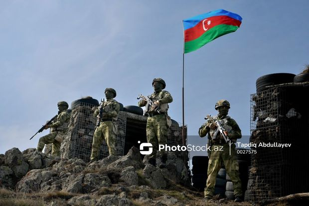

Xəbərlər

Oxu.Az xatırladır ki, Azərbaycan Xalq Cümhuriyyətinin yaranmasından sonra 1919-cu ildə milli hökumətin qərarı ilə təsis edilən Hərbi Nazirliyin tərkibində ölkənin bir sıra güc strukturları, o cümlədən Sərhəd Qoşunları fəaliyyətə başlayıb. Sovet İttifaqı dövründə Sərhəd Xidməti Dövlət Təhlükəsizlik Komitəsinin bir strukturu kimi fəaliyyət göstərib.
Daha ətraflı.jpg)
İşğaldan azad olunun digər rayonlarımız kimi Kəlbəcər də əvvəlki əzəmətini geri qaytarır. Şəhərdə müasir infrastrukturun qurulması birbaşa ölkə rəhbərinin diqqət mərkəzindədir.Xezerxeber.az-ın xəbərinə görə, millət vəkili Aqil Məmmədov deyir ki, Kəlbəcər şəhərində tikinti, təmir və bərpa işlərinin layihələndirilməsi və həyata keçirilməsi məqsədilə prezidentin ehtiyat fondundan 80 milyon manat vəsaitin ayrılması, dövlət başçısı İlham Əliyevin işğal dövründə yerlə bir edilən ərazilərdə quruculuq işlərinə böyük önəm verdiyini göstərir.
Daha ətraflı
Ağdaş Rayon Polis Şöbəsinin əməkdaşları tərəfindən qanunsuz saxlanılan odlu silah-sursatın könüllü təhvil verilməsi istiqamətində profilaktiki tədbirlər keçirilib.
Bu barədə Daxili İşlər Nazirliyinin Mətbuat Xidmətindən məlumat verilib.
Bildirilib ki, vətəndaşlara edilən müraciət, eləcə də aparılan profilaktiki işlərin nəticəsi olaraq rayonun Yuxarı Ağcayazı kənd sakinləri – Cəlil və Həsən Hüseynovlar müvafiq sənədləri olmayan “TOZ” markalı ov tüfənglərini könüllü olaraq polisə təqdim ediblər.
Daha ətraflı